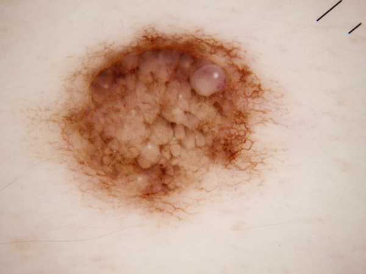
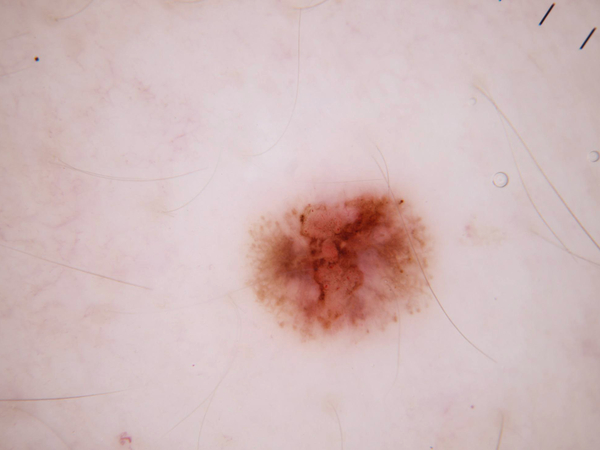
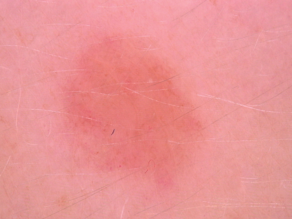
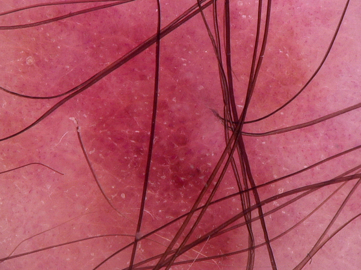

P23 classifies dermoscopy images across 7 skin disease classes using a zone-adaptive 3-engine ensemble and routes every case to one of four triage zones — from high-confidence benign to immediate specialist referral. A dedicated melanoma probability flag fires independently of the primary classification. A clinician always stays in command. Seven annotated demo cases span the full spectrum from high-confidence benign lesions to red-zone specialist deferral.
P23 combines confidence-zone triage with a dedicated melanoma safety flag and a seven-class dermoscopy classification engine. Each capability is designed to work together — classify the lesion, flag the melanoma risk, and know exactly when to defer.
Seven dermoscopy cases from the HAM10000 dataset, each showing the full ensemble output: primary classification, confidence zone, melanoma flag status, and per-class probability bars across all seven disease classes. Select a case and explore why the system defers high-melanoma cases to a specialist rather than forcing a verdict.

All seven demo cases use HAM10000 / ISIC 2018 Task 3 dermoscopy images — open research dataset, consented and published. Never a clinical diagnosis. A qualified dermatologist must interpret all findings.
Zone assignment is computed from ensemble confidence in the primary classification. The four zones map directly to clinical action: higher confidence enables a firmer recommendation, lower confidence triggers mandatory human review. The melanoma flag operates independently of zone assignment.
AEGIS P23 classifies across the seven HAM10000 / ISIC 2018 Task 3 categories, spanning malignant, potentially malignant, and benign lesions. The full per-class probability distribution is returned for every case — not just the top label.
P23 is grounded in dermoscopy science, transfer learning theory, and clinical AI safety design. The feature extraction pipeline, ensemble architecture, and zone-adaptive weighting all derive from first principles — not arbitrary choices.
Dermoscopy (epiluminescence microscopy) illuminates sub-surface skin structures invisible to the naked eye — pigment network, vascular patterns, regression structures, and architectural disorder. These dermoscopic features encode clinically meaningful information about lesion biology. Melanoma, for example, shows irregular pigmentation, atypical vascular structures, and regression areas that are visible dermoscopically but not clinically. AEGIS P23 learns to read these features from the HAM10000 / ISIC 2018 Task 3 dataset — 13,611 dermoscopy images across 7 disease classes, the benchmark established by the International Skin Imaging Collaboration.
P23 uses MobileNetV2 pre-trained on ImageNet as the feature extractor — a lightweight convolutional architecture that captures rich visual representations from dermoscopy images without requiring millions of labelled training examples. The extracted feature representation is passed through a dimensionality reduction stage to produce a compact, discriminative feature vector. Three independently trained classifiers — Nu-SVC, SVM, and XGBoost — each learn from this feature space and vote on the classification. The zone-adaptive ensemble adjusts the voting weights based on confidence zone, ensuring the most reliable signal leads when certainty is high. The full per-class probability distribution is derived from ensemble output.

All engines trained and evaluated on distilled datasets drawn from HAM10000 / ISIC 2018 Task 3 under strict train/test separation. Validation methodology ensures no test image appears in training. Results reported exactly as measured — no inflation, no cherry-picking.
| Engine | Architecture | Validation Accuracy | Role |
|---|---|---|---|
| Nu-SVC | Nu-Support Vector Classifier | 70.5% | Ensemble member — zone-adaptive vote |
| SVM | Support Vector Machine (RBF) | 70.5% | Ensemble member — zone-adaptive vote |
| XGBoost | Gradient Boosted Trees | 63.7% | Ensemble member — zone-adaptive vote |
Honest note: individual model accuracy of 70.5% on a 7-class dermoscopy problem is a meaningful result on an imbalanced dataset with 13,611 images. The zone-adaptive ensemble substantially improves on this for the 55.9% of cases it classifies with high confidence (AUC 0.9131, accuracy 91.24%). The remaining 44.1% are routed to lower-confidence zones — not silently misclassified, but explicitly flagged for human review. That is the correct clinical design.
P23 is trained and validated on a distilled research dataset derived from HAM10000 / ISIC 2018 Task 3 — a publicly available, consented dermoscopy image archive from the International Skin Imaging Collaboration. Raw patient dermoscopy images are not distributed in the public demo. The seven demo cases embedded in the public console are HAM10000 images released for open research use under their original dataset licence.

These apps demonstrate clinical AI systems capable of classification, early pre-emptive detection, and progressive augmented management. Because full AEGIS engines and datasets run to several gigabytes, only educational demo modes are hosted here — live classification on new patient dermoscopy images requires the AEGIS Desktop Application. Institutions wishing to contribute local data for engine refinement are welcome to reach out; we share progressive validation results with every contributing partner and operate in strict accordance with PDPA.
What institutional partners receive: technical report with full validation methodology · AEGIS Desktop Application licence · progressive model result updates as the engine board improves · co-attribution in peer-reviewed publications where applicable.
All enquiries to aegisloh@aegishumanai.com. International partnerships welcome. DUA provided before any data exchange.